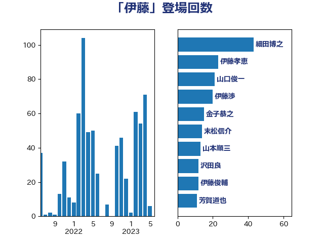

単語「伊藤」

| 伊藤孝江 | 公明党 | 28 回 |
| 細田博之 | 自由民主党 | 26 回 |
| 山本順三 | 自由民主党 | 23 回 |
| 伊藤孝恵 | 国民民主党 | 21 回 |
| 金子恭之 | 自由民主党 | 16 回 |
| 伊藤俊輔 | 立憲民主党 | 15 回 |
| 山口俊一 | 自由民主党 | 14 回 |
| 山東昭子 | 自由民主党 | 13 回 |
| 芳賀道也 | 国民民主党 | 10 回 |
| 野村哲郎 | 自由民主党 | 10 回 |
| 伊藤渉 | 公明党 | 9 回 |
| 赤羽一嘉 | 公明党 | 9 回 |
| 中根一幸 | 自由民主党 | 8 回 |
| 佐藤茂樹 | 公明党 | 8 回 |
| 平沢勝栄 | 自由民主党 | 8 回 |
| 斎藤嘉隆 | 立憲民主党 | 8 回 |
| 末松信介 | 自由民主党 | 8 回 |
| 嘉田由紀子 | 無所属 | 7 回 |
| 大西健介 | 立憲民主党 | 7 回 |
| 木原誠二 | 自由民主党 | 7 回 |
| 萩生田光一 | 自由民主党 | 7 回 |
| 足立康史 | 日本維新の会 | 7 回 |
| 鶴保庸介 | 自由民主党 | 7 回 |
| あかま二郎 | 自由民主党 | 6 回 |
| 斉藤鉄夫 | 公明党 | 6 回 |
| 横沢高徳 | 立憲民主党 | 6 回 |
| 永岡桂子 | 自由民主党 | 6 回 |
| 高橋光男 | 公明党 | 6 回 |
| あべ俊子 | 自由民主党 | 5 回 |
| 仁木博文 | 無所属 | 5 回 |
| 小熊慎司 | 立憲民主党 | 5 回 |
| 浜野喜史 | 国民民主党 | 5 回 |
| 海江田万里 | 立憲民主党 | 5 回 |
| 福岡資麿 | 自由民主党 | 5 回 |
| 義家弘介 | 自由民主党 | 5 回 |
| 野田聖子 | 自由民主党 | 5 回 |
| 阿部知子 | 立憲民主党 | 5 回 |
| 高木毅 | 自由民主党 | 5 回 |
| 高良鉄美 | 無所属 | 5 回 |
| 伊東良孝 | 自由民主党 | 4 回 |
| 伊藤岳 | 日本共産党 | 4 回 |
| 城内実 | 自由民主党 | 4 回 |
| 塩川鉄也 | 日本共産党 | 4 回 |
| 安達澄 | 無所属 | 4 回 |
| 浜田靖一 | 自由民主党 | 4 回 |
| 浦野靖人 | 日本維新の会 | 4 回 |
| 田村まみ | 国民民主党 | 4 回 |
| 石井浩郎 | 自由民主党 | 4 回 |
| 茂木敏充 | 自由民主党 | 4 回 |
| 野田国義 | 立憲民主党 | 4 回 |
| 金子恵美 | 立憲民主党 | 4 回 |
| 鈴木憲和 | 自由民主党 | 4 回 |
| ながえ孝子 | 無所属 | 3 回 |
| 三ッ林裕巳 | 自由民主党 | 3 回 |
| 上川陽子 | 自由民主党 | 3 回 |
| 中西健治 | 自由民主党 | 3 回 |
| 井上信治 | 自由民主党 | 3 回 |
| 伊藤忠彦 | 自由民主党 | 3 回 |
| 伊藤達也 | 自由民主党 | 3 回 |
| 吉川沙織 | 立憲民主党 | 3 回 |
| 堤かなめ | 立憲民主党 | 3 回 |
| 大塚拓 | 自由民主党 | 3 回 |
| 安江伸夫 | 公明党 | 3 回 |
| 小野田紀美 | 自由民主党 | 3 回 |
| 林芳正 | 自由民主党 | 3 回 |
| 柴田巧 | 日本維新の会 | 3 回 |
| 河西宏一 | 公明党 | 3 回 |
| 浜地雅一 | 公明党 | 3 回 |
| 渡辺博道 | 自由民主党 | 3 回 |
| 田中和徳 | 自由民主党 | 3 回 |
| 田村貴昭 | 日本共産党 | 3 回 |
| 藤原崇 | 自由民主党 | 3 回 |
| 鈴木馨祐 | 自由民主党 | 3 回 |
| 鎌田さゆり | 立憲民主党 | 3 回 |
| 中曽根康隆 | 自由民主党 | 2 回 |
| 串田誠一 | 日本維新の会 | 2 回 |
| 伊藤信太郎 | 自由民主党 | 2 回 |
| 佐藤信秋 | 自由民主党 | 2 回 |
| 加田裕之 | 自由民主党 | 2 回 |
| 吉田忠智 | 立憲民主党 | 2 回 |
| 奥下剛光 | 日本維新の会 | 2 回 |
| 寺田学 | 立憲民主党 | 2 回 |
| 小倉將信 | 自由民主党 | 2 回 |
| 山本香苗 | 公明党 | 2 回 |
| 山添拓 | 日本共産党 | 2 回 |
| 岡本三成 | 公明党 | 2 回 |
| 岡田克也 | 立憲民主党 | 2 回 |
| 岩渕友 | 日本共産党 | 2 回 |
| 斎藤アレックス | 国民民主党 | 2 回 |
| 本村伸子 | 日本共産党 | 2 回 |
| 杉本和巳 | 日本維新の会 | 2 回 |
| 松野博一 | 自由民主党 | 2 回 |
| 柳ヶ瀬裕文 | 日本維新の会 | 2 回 |
| 浜口誠 | 国民民主党 | 2 回 |
| 田畑裕明 | 自由民主党 | 2 回 |
| 矢倉克夫 | 公明党 | 2 回 |
| 石井章 | 日本維新の会 | 2 回 |
| 礒崎哲史 | 国民民主党 | 2 回 |
| 秋野公造 | 公明党 | 2 回 |
| 穀田恵二 | 日本共産党 | 2 回 |
| 笠井亮 | 日本共産党 | 2 回 |
| 細田健一 | 自由民主党 | 2 回 |
| 藤田文武 | 日本維新の会 | 2 回 |
| 越智隆雄 | 自由民主党 | 2 回 |
| 中谷真一 | 自由民主党 | 1 回 |
| 井上英孝 | 日本維新の会 | 1 回 |
| 井野俊郎 | 自由民主党 | 1 回 |
| 冨樫博之 | 自由民主党 | 1 回 |
| 北村経夫 | 自由民主党 | 1 回 |
| 原口一博 | 立憲民主党 | 1 回 |
| 古川俊治 | 自由民主党 | 1 回 |
| 古川元久 | 国民民主党 | 1 回 |
| 古川禎久 | 自由民主党 | 1 回 |
| 吉田久美子 | 公明党 | 1 回 |
| 吉良よし子 | 日本共産党 | 1 回 |
| 塩村あやか | 立憲民主党 | 1 回 |
| 大島敦 | 立憲民主党 | 1 回 |
| 太田房江 | 自由民主党 | 1 回 |
| 宗清皇一 | 自由民主党 | 1 回 |
| 宮本徹 | 日本共産党 | 1 回 |
| 小林茂樹 | 自由民主党 | 1 回 |
| 小沢雅仁 | 立憲民主党 | 1 回 |
| 小野泰輔 | 日本維新の会 | 1 回 |
| 山井和則 | 立憲民主党 | 1 回 |
| 山口壯 | 自由民主党 | 1 回 |
| 山岡達丸 | 立憲民主党 | 1 回 |
| 山本博司 | 公明党 | 1 回 |
| 山際大志郎 | 自由民主党 | 1 回 |
| 岩田和親 | 自由民主党 | 1 回 |
| 岸信夫 | 自由民主党 | 1 回 |
| 川合孝典 | 国民民主党 | 1 回 |
| 市村浩一郎 | 日本維新の会 | 1 回 |
| 平林晃 | 公明党 | 1 回 |
| 後藤茂之 | 自由民主党 | 1 回 |
| 新垣邦男 | 立憲民主党 | 1 回 |
| 新妻秀規 | 公明党 | 1 回 |
| 杉久武 | 公明党 | 1 回 |
| 東徹 | 日本維新の会 | 1 回 |
| 松下新平 | 自由民主党 | 1 回 |
| 松島みどり | 自由民主党 | 1 回 |
| 松村祥史 | 自由民主党 | 1 回 |
| 根本匠 | 自由民主党 | 1 回 |
| 森屋宏 | 自由民主党 | 1 回 |
| 森田俊和 | 立憲民主党 | 1 回 |
| 櫻井周 | 立憲民主党 | 1 回 |
| 武田良太 | 自由民主党 | 1 回 |
| 江渡聡徳 | 自由民主党 | 1 回 |
| 泉健太 | 立憲民主党 | 1 回 |
| 泉田裕彦 | 自由民主党 | 1 回 |
| 津島淳 | 自由民主党 | 1 回 |
| 浅野哲 | 国民民主党 | 1 回 |
| 清水貴之 | 日本維新の会 | 1 回 |
| 渡辺猛之 | 自由民主党 | 1 回 |
| 熊野正士 | 公明党 | 1 回 |
| 片山大介 | 日本維新の会 | 1 回 |
| 牧原秀樹 | 自由民主党 | 1 回 |
| 田中健 | 国民民主党 | 1 回 |
| 田島麻衣子 | 立憲民主党 | 1 回 |
| 畦元将吾 | 自由民主党 | 1 回 |
| 石井準一 | 自由民主党 | 1 回 |
| 石橋通宏 | 立憲民主党 | 1 回 |
| 神田憲次 | 自由民主党 | 1 回 |
| 福島みずほ | 社会民主党 | 1 回 |
| 福島伸享 | 無所属 | 1 回 |
| 秋本真利 | 自由民主党 | 1 回 |
| 稲富修二 | 立憲民主党 | 1 回 |
| 竹内真二 | 公明党 | 1 回 |
| 緑川貴士 | 立憲民主党 | 1 回 |
| 舞立昇治 | 自由民主党 | 1 回 |
| 若宮健嗣 | 自由民主党 | 1 回 |
| 菅義偉 | 自由民主党 | 1 回 |
| 落合貴之 | 立憲民主党 | 1 回 |
| 西銘恒三郎 | 自由民主党 | 1 回 |
| 谷田川元 | 立憲民主党 | 1 回 |
| 近藤和也 | 立憲民主党 | 1 回 |
| 道下大樹 | 立憲民主党 | 1 回 |
| 遠藤敬 | 日本維新の会 | 1 回 |
| 酒井庸行 | 自由民主党 | 1 回 |
| 里見隆治 | 公明党 | 1 回 |
| 野田佳彦 | 立憲民主党 | 1 回 |
| 金田勝年 | 自由民主党 | 1 回 |
| 階猛 | 立憲民主党 | 1 回 |
| 高橋はるみ | 自由民主党 | 1 回 |
| 高鳥修一 | 自由民主党 | 1 回 |
| 麻生太郎 | 自由民主党 | 1 回 |